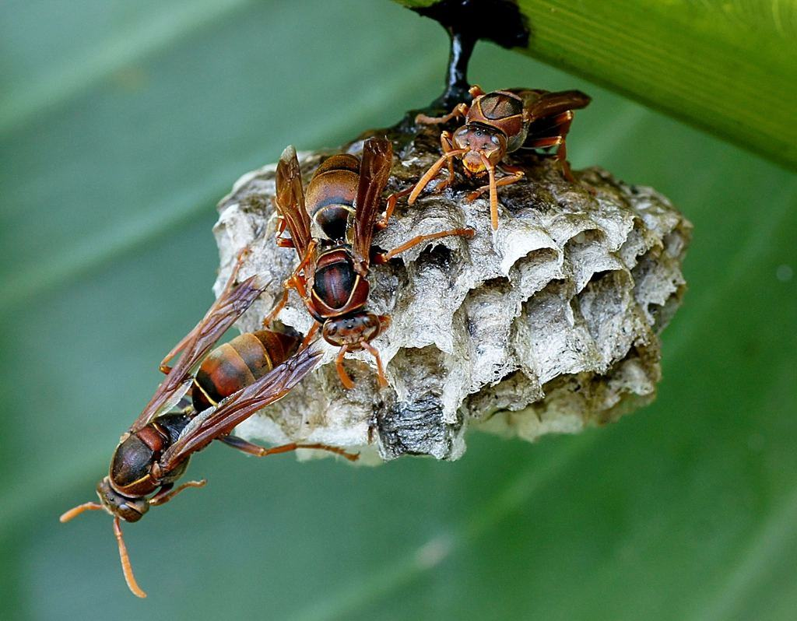
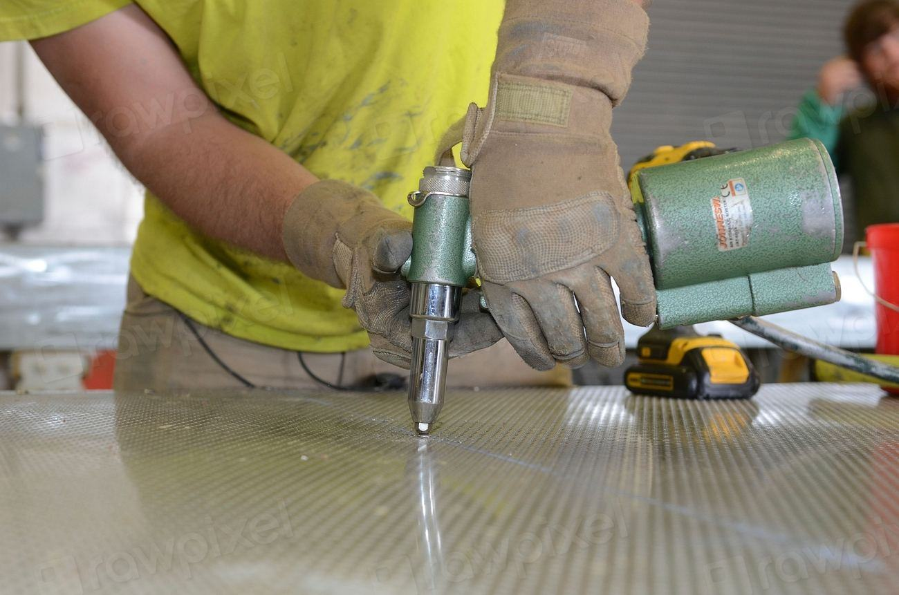
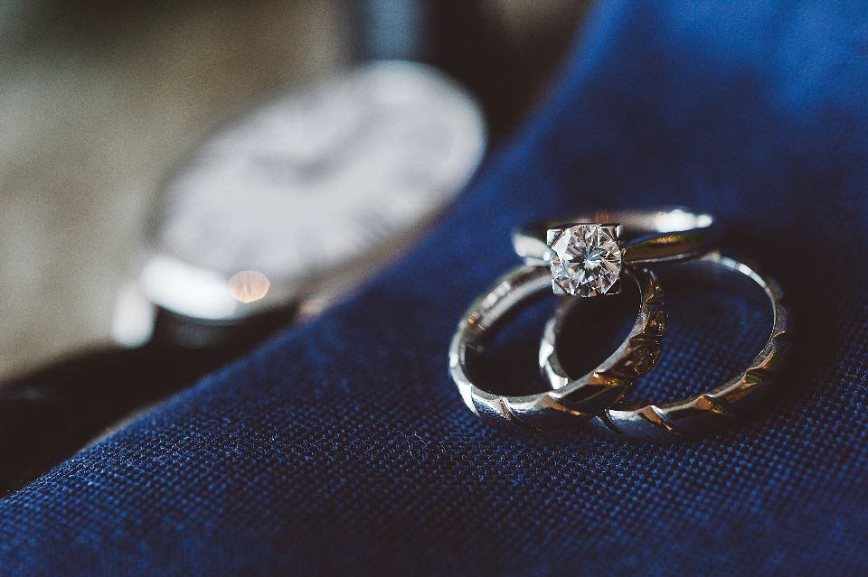
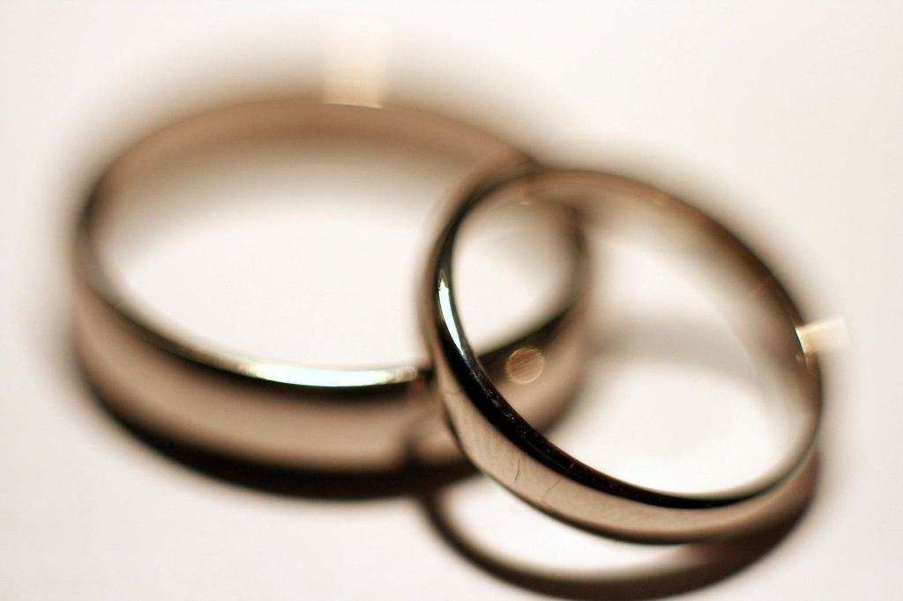

Tjänster
I dag är vi fem anställda och arbetar med stift, museer, hembygdsföreningar och ägare av k-märkta hus i hela södra Sverige. Vi tar sällan fler än 40 uppdrag om året, men de kan pågå i flera år – vår längsta övervakning, av en sockenkyrka utanför Ljungby, har nu löpt sedan 2012.
Vilken byggnad eller samling gäller det?

Kyrkobyggnader
En kyrkvind är en perfekt miljö för strimmig trägnagare: gammalt furuvirke, fukt och ingen som tittar. Vi inventerar, mäter fukten och föreslår åtgärder som Länsstyrelsen kan godkänna enligt kulturmiljölagen.
Vi har arbetat i 63 kyrkor i Växjö, Lunds och Linköpings stift.

Museer och magasin
Klisterfällor, klimatloggar och regelbundna rundor fångar ängrar och mal innan de når samlingen. Vi utbildar också personalen i att känna igen tecknen.
Arbetet följer standarden SS-EN 16790 för integrerat skadedjursskydd i kulturarv.

Kulturhistoriska hus
Ägare av k-märkta torp och herrgårdar vill inte byta ut originalvirke i onödan. Vi tar reda på om angreppet är aktivt eller hundra år gammalt innan någon river något.
Fyra av tio inventeringar visar att angreppet redan har upphört av sig självt.

Föremål och textil
Altarskåp, bondemöbler och brudkronor behandlas i syrefria tält i vår verkstad i Växjö. Textilier fryses i minus 30 grader i tre dygn.
Varje föremål fotograferas och dokumenteras före och efter behandlingen.
Mät först, behandla sedan
- 1

Bilder och samtal
Skicka bilder på flyghål och borrmjöl. Ofta kan vi redan då säga om det är bråttom.
- 2

Inventering på plats
Vi mäter fukt, räknar färska hål och lägger ut papper för att se om borrmjöl faller.
- 3
Åtgärd med antikvarien
Förslaget skrivs så att stiftet eller länsstyrelsen kan godkänna det innan vi börjar.
- 4

Övervakning i flera år
Trä som har angripits följs upp årligen tills vi är säkra på att larverna är borta.
Konservatorer, inte bara tekniker
- KonservatorsexamenMärta Lindegren är utbildad konservator vid Göteborgs universitet med inriktning på trä och textil.
- Certifierad sakkunnig kulturvärdenTobias Wahlund är certifierad sakkunnig avseende kulturvärden och kan intyga ingrepp i k-märkta byggnader.
- Standard SS-EN 16790Våra program för museer följer standarden för integrerat skadedjursskydd i kulturarv.
- Arbete med äldre gifterUtbildade i provtagning och skyddsutrustning där lindan, DDT eller arsenik använts tidigare.